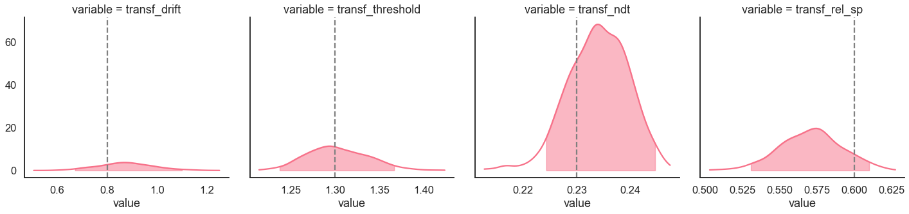
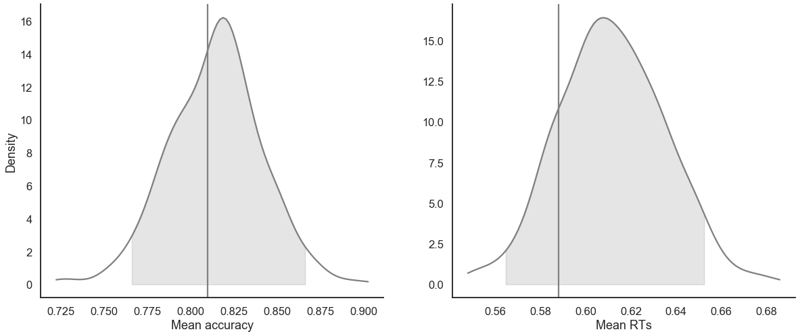

[1]:
import rlssm
import pandas as pd
Simulate some data:¶
[2]:
from rlssm.random import simulate_DDM
[3]:
data = simulate_DDM(
n_trials=400,
gen_drift=.8,
gen_threshold=1.3,
gen_ndt=.23,
gen_rel_sp=.6)
INFO:numexpr.utils:NumExpr defaulting to 8 threads.
[4]:
data.describe()[['rt', 'accuracy']]
[4]:
| rt | accuracy | |
|---|---|---|
| count | 400.000000 | 400.000000 |
| mean | 0.587870 | 0.810000 |
| std | 0.292844 | 0.392792 |
| min | 0.268000 | 0.000000 |
| 25% | 0.387500 | 1.000000 |
| 50% | 0.497500 | 1.000000 |
| 75% | 0.698750 | 1.000000 |
| max | 1.854000 | 1.000000 |
Initialise the model:¶
[5]:
model = rlssm.DDModel(hierarchical_levels = 1, starting_point_bias=True)
Using cached StanModel
[6]:
model.family, model.model_label, model.hierarchical_levels
[6]:
('DDM', 'DDM_bias', 1)
[7]:
model.starting_point_bias
[7]:
True
Fit¶
[8]:
# sampling parameters
n_iter = 1000
n_chains = 2
n_thin = 1
# bayesian model
drift_priors = {'mu':1, 'sd':3}
threshold_priors = {'mu':-1, 'sd':3}
ndt_priors = {'mu':-1, 'sd':1}
rel_sp_priors = None # set to default
[9]:
model_fit = model.fit(
data,
drift_priors=drift_priors,
threshold_priors=threshold_priors,
ndt_priors=ndt_priors,
rel_sp_priors=rel_sp_priors,
thin = n_thin,
iter = n_iter,
chains = n_chains,
verbose = False)
WARNING:pystan:Maximum (flat) parameter count (1000) exceeded: skipping diagnostic tests for n_eff and Rhat.
To run all diagnostics call pystan.check_hmc_diagnostics(fit)
[10]:
model_fit
[10]:
<rlddm.fits.DDMFittedModel at 0x126e9b350>
get Rhat¶
[11]:
Rhat = model_fit.check_convergence()
Rhat.describe()
[11]:
| Rhat | |
|---|---|
| count | 4.000000 |
| mean | 1.000916 |
| std | 0.001313 |
| min | 0.999375 |
| 25% | 1.000065 |
| 50% | 1.001052 |
| 75% | 1.001903 |
| max | 1.002187 |
[12]:
Rhat.head()
[12]:
| Rhat | variable | |
|---|---|---|
| 0 | 1.001808 | drift |
| 1 | 0.999375 | threshold |
| 2 | 1.002187 | ndt |
| 3 | 1.000295 | rel_sp |
calculate wAIC¶
[13]:
wAIC = model_fit.calculate_wAIC()
wAIC
[13]:
{'lppd': -126.96180999202987,
'p_waic': 4.309469820635803,
'waic': 262.54255962533136,
'waic_se': 46.63095491552582}
Check divergences¶
[14]:
model_fit.check_divergencies()
0 of 1000 iterations saturated the maximum tree depth of 10 (0.0%)
E-BFMI indicated no pathological behavior
0.0 of 1000 iterations ended with a divergence (0.0%)
Get posteriors¶
[15]:
samples = model_fit.get_posteriors(pars=model_fit.parameters_names, permuted=True, diagnostics=False)
[16]:
samples.head()
[16]:
| chain | draw | warmup | permutation | chain_permutation | permutation_order | chain_permutation_order | drift | ndt | rel_sp | threshold | |
|---|---|---|---|---|---|---|---|---|---|---|---|
| 370 | 0 | 370 | 0 | 66 | 66 | 0 | 0 | 0.862678 | -1.464976 | 0.154375 | 0.298892 |
| 430 | 0 | 430 | 0 | 159 | 159 | 1 | 1 | 0.772730 | -1.417085 | 0.241953 | 0.223235 |
| 427 | 0 | 427 | 0 | 261 | 261 | 2 | 2 | 0.771627 | -1.466670 | 0.270051 | 0.293650 |
| 405 | 0 | 405 | 0 | 83 | 83 | 3 | 3 | 0.943414 | -1.455419 | 0.138446 | 0.236440 |
| 97 | 0 | 97 | 0 | 138 | 138 | 4 | 4 | 0.916977 | -1.477243 | 0.152225 | 0.294681 |
[17]:
import seaborn as sns
sns.set(context = "talk",
style = "white",
palette = "husl",
rc={'figure.figsize':(15, 8)})
[18]:
g = model_fit.plot_posteriors(height=5, show_intervals='HDI')
for i, ax in enumerate(g.axes.flatten()):
ax.axvline(data[['drift', 'threshold', 'ndt', 'rel_sp']].mean().values[i], color='grey', linestyle='--')

Posterior predictives¶
Ungrouped posterior predictives:¶
[19]:
pp = model_fit.get_posterior_predictives(n_posterior_predictives=100)
[20]:
pp.head()
[20]:
| variable | rt | ... | accuracy | ||||||||||||||||||
|---|---|---|---|---|---|---|---|---|---|---|---|---|---|---|---|---|---|---|---|---|---|
| trial | 1 | 2 | 3 | 4 | 5 | 6 | 7 | 8 | 9 | 10 | ... | 391 | 392 | 393 | 394 | 395 | 396 | 397 | 398 | 399 | 400 |
| sample | |||||||||||||||||||||
| 1 | 0.387083 | 0.524083 | 0.386083 | 0.645083 | 0.678083 | 1.597083 | 0.429083 | 0.368083 | 0.540083 | 0.536083 | ... | 1.0 | 1.0 | 1.0 | 1.0 | 1.0 | 1.0 | 1.0 | 1.0 | 1.0 | 1.0 |
| 2 | 0.421420 | 0.296420 | 0.770420 | 0.356420 | 1.465420 | 0.347420 | 0.460420 | 0.694420 | 0.423420 | 0.906420 | ... | 1.0 | 1.0 | 1.0 | 0.0 | 1.0 | 1.0 | 0.0 | 1.0 | 1.0 | 1.0 |
| 3 | 0.978692 | 2.565692 | 0.379692 | 0.683692 | 0.519692 | 0.532692 | 0.435692 | 0.325692 | 0.430692 | 0.654692 | ... | 0.0 | 1.0 | 1.0 | 1.0 | 1.0 | 1.0 | 1.0 | 1.0 | 1.0 | 0.0 |
| 4 | 0.610303 | 0.538303 | 1.040303 | 0.482303 | 0.385303 | 0.576303 | 0.392303 | 0.443303 | 0.884303 | 1.356303 | ... | 1.0 | 1.0 | 1.0 | 1.0 | 1.0 | 1.0 | 1.0 | 1.0 | 1.0 | 0.0 |
| 5 | 0.409266 | 0.334266 | 0.870266 | 0.364266 | 0.629266 | 0.322266 | 0.459266 | 0.541266 | 0.592266 | 0.616266 | ... | 1.0 | 1.0 | 1.0 | 0.0 | 0.0 | 1.0 | 1.0 | 0.0 | 0.0 | 1.0 |
5 rows × 800 columns
Posterior predictives summaries:¶
[21]:
pp_summary = model_fit.get_posterior_predictives_summary(n_posterior_predictives=500)
[22]:
pp_summary.head()
[22]:
| mean_acc | mean_rt | skew_rt | quant_10_rt_up | quant_30_rt_up | quant_50_rt_up | quant_70_rt_up | quant_90_rt_up | quant_10_rt_low | quant_30_rt_low | quant_50_rt_low | quant_70_rt_low | quant_90_rt_low | |
|---|---|---|---|---|---|---|---|---|---|---|---|---|---|
| 0 | 0.8125 | 0.632896 | 1.719865 | 0.331483 | 0.412283 | 0.500083 | 0.693883 | 1.112083 | 0.403883 | 0.458283 | 0.534083 | 0.689083 | 1.084883 |
| 1 | 0.7950 | 0.602282 | 2.749183 | 0.311120 | 0.377620 | 0.465420 | 0.596020 | 0.982520 | 0.385620 | 0.495720 | 0.571920 | 0.700720 | 1.215920 |
| 2 | 0.7925 | 0.638415 | 2.195681 | 0.307692 | 0.390292 | 0.500692 | 0.689292 | 1.090692 | 0.386892 | 0.488092 | 0.603692 | 0.848892 | 1.171892 |
| 3 | 0.7850 | 0.598815 | 1.830859 | 0.321203 | 0.386203 | 0.460803 | 0.643803 | 1.027803 | 0.344303 | 0.483803 | 0.600303 | 0.724303 | 0.983803 |
| 4 | 0.8000 | 0.631164 | 1.881224 | 0.326766 | 0.425966 | 0.543266 | 0.684866 | 1.041466 | 0.393066 | 0.499966 | 0.593766 | 0.726166 | 1.075366 |
Plot posterior predictives:¶
[23]:
model_fit.plot_mean_posterior_predictives(n_posterior_predictives=500, show_intervals='HDI')

Plot quantiles:¶
[24]:
model_fit.plot_quantiles_posterior_predictives(kind='shades')

Get starting values for further sampling¶
[25]:
sv = model_fit.get_starting_values()
sv
[25]:
| chain | draw | warmup | drift | ndt | rel_sp | threshold | |
|---|---|---|---|---|---|---|---|
| 499 | 0 | 499 | 0 | 0.869806 | -1.436744 | 0.187767 | 0.267553 |
| 999 | 1 | 499 | 0 | 0.616195 | -1.446949 | 0.239987 | 0.257146 |